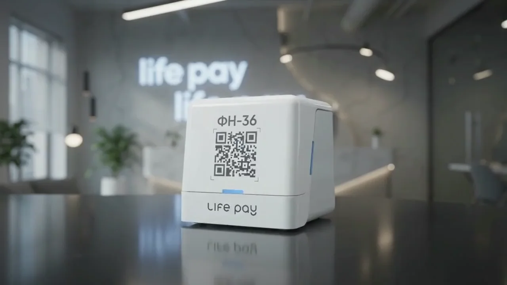
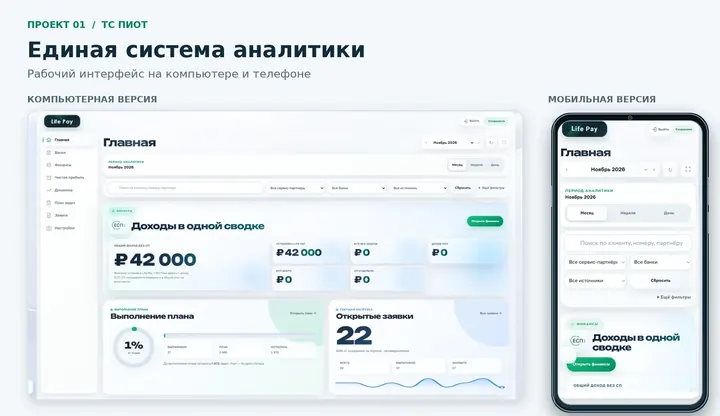
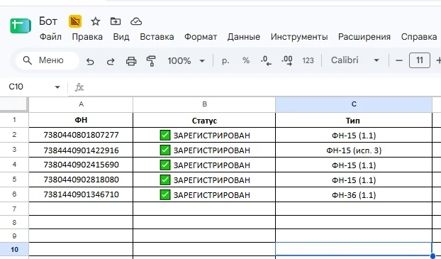
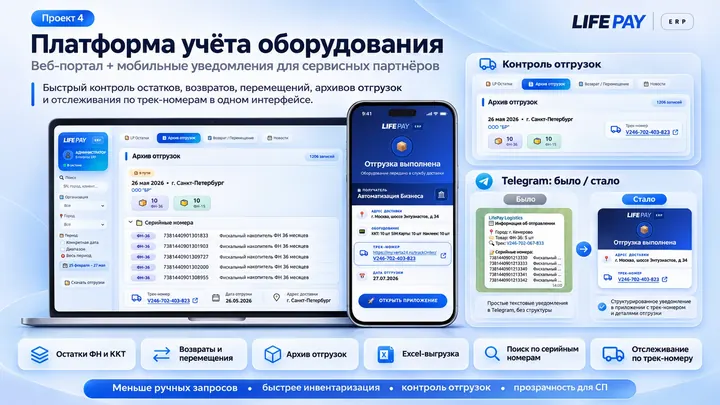
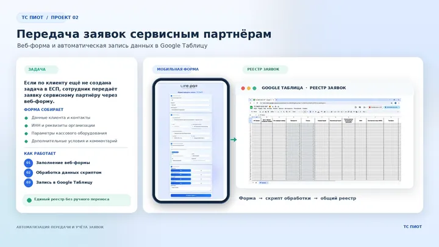
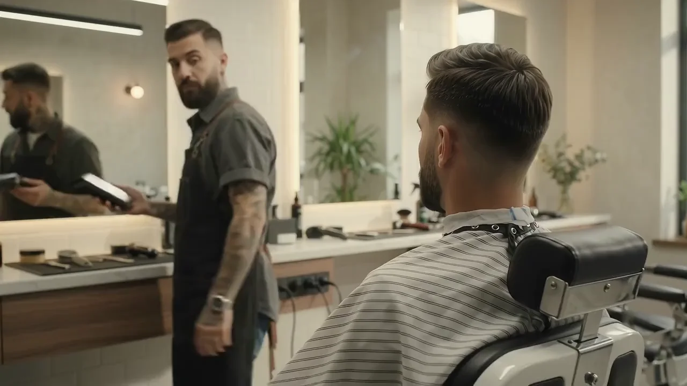
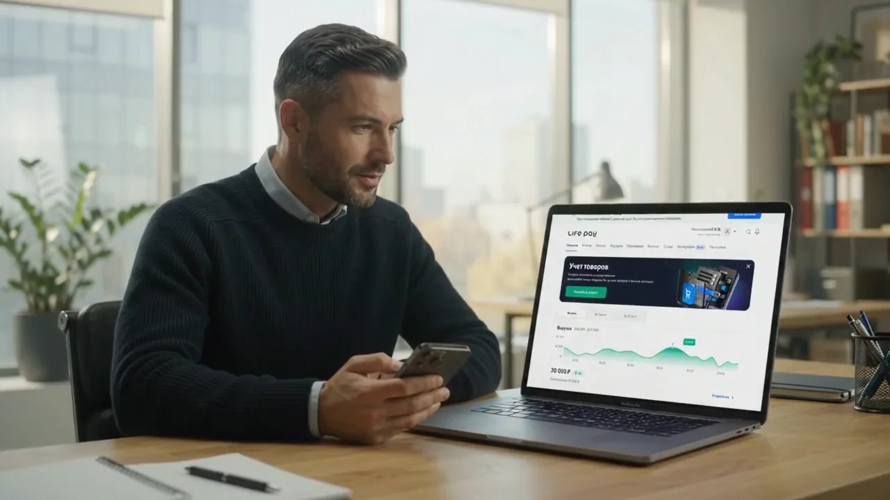

Сбор и обработка данных
Получение и структурирование сведений об оборудовании от сервисных партнёров.
Данные партнёровОт операционных задач
к цифровым решениям.
Сопровождаю сервисных партнёров, работаю с данными и создаю инструменты для команды.
Сервисные процессы.
Конкретный вклад через реальные инструменты.
Соединяю ежедневную работу с сервисными партнёрами и развитие инструментов, которые помогают команде работать с данными и оборудованием.
Дмитрий Козлов
Мой фокус — достоверный учёт оборудования, понятные сервисные процессы и автоматизация повторяющихся операций.
Портрет сайта публикуется вместе с файлами проекта и виден всем. Здесь можно временно изменить фото, имя и руководителя только для подготовки PDF.
Отдел регистрации и сопровождения сервисных партнёров. Достоверные данные об оборудовании и понятные рабочие процессы.
Получение и структурирование сведений об оборудовании от сервисных партнёров.
Данные партнёровСопоставление рабочих данных, выявление расхождений и поддержание реестра оборудования.
Контроль качестваПодготовка сведений для контроля оборудования и взаимодействие с партнёрами.
Учёт оборудованияДополнительные направления: аналитика ТС ПИОТ, автоматизация ФН, сопровождение ESP-пилота и развитие цифровых инструментов. Логистические сценарии находятся в доработке.
Для каждого проекта — задача, мой вклад, реализованные функции и практический результат.

Накопитель раскрывается по слоям в непрерывной анимации. В работе так же: данные, процессы и инструменты должны быть связаны в одну систему.
От разрозненных данных — к единой картине для руководства.

Создан самостоятельный аналитический инструмент. Рабочие и финансовые показатели доступны в одном интерфейсе; инструмент используется в работе руководителей.
Рабочие и финансовые показатели нужно собирать и сопоставлять в одном месте, чтобы контролировать внедрение и замечать расхождения.
Самостоятельно предложил идею и реализовал аналитическую веб-платформу: от структуры данных и скриптов до интерфейса.
День 1 — задача и структура данных; дни 2–3 — таблицы и скрипты; дни 4–6 — интерфейс; день 7 — тестирование и запуск.
Список серийных номеров на входе. Готовые результаты на выходе.

Повторяющиеся ручные проверки объединены в автоматизированный процесс. Результат проверки можно сразу использовать в таблице или файле.
Каждый фискальный накопитель приходилось вручную проверять на сайте ФНС по одному серийному номеру.
Создал Python-бота для массовой проверки ФН и подготовки результатов для дальнейшей работы.
Публичная демонстрация бота не предоставлена.
Оборудование, остатки и история отгрузок в едином рабочем пространстве.

Единый интерфейс для проверки остатков, поиска оборудования и просмотра отгрузок. Партнёры могут получать сведения без отдельных ручных запросов.
Сведения об оборудовании и отправлениях приходится собирать из отдельных запросов. Партнёрам нужен самостоятельный доступ к этим данным.
Развитие цифрового инструмента учёта оборудования и проработка сценариев работы сервисных партнёров.
Сценарии выдачи, возврата, перемещения и фиксации сроков продолжают прорабатываться. Они не включены в перечень завершённых функций.
Прежний адрес демонстрации возвращает 404. Представлены сохранённые материалы проекта.
От веб-формы до общего реестра — без ручного переноса.

Заявки собираются в общем реестре. Данные клиента и оборудования передаются в структурированном виде без повторного ручного ввода.
Когда по клиенту ещё нет задачи в ЕСП, необходимо передать сервисному партнёру полную и структурированную заявку.
Работа над цифровым сценарием передачи заявок: веб-форма, обработка данных и единый реестр.

Сопровождение партнёров, достоверные сведения об оборудовании и понятные процессы — моя ежедневная зона ответственности.
К практическим результатамРезультаты связаны с конкретными инструментами. Финансовый эффект и экономия времени не оценены численно.
Рабочие и финансовые показатели требуют консолидации
В ТС ПИОТ данные собраны в одном месте. Аналитика доступна на компьютере и телефоне.
Основание: аналитика ТС ПИОТ ↗Проверка каждого номера ФН вручную
Python-бот проверяет список через ФНС и подготавливает Google Таблицу и Excel-файл.
Основание: Бот ФН ↗Разрозненные запросы об оборудовании и отгрузках
ERP объединяет остатки, поиск и архив отправлений. Логистический блок продолжает развиваться.
Основание: LIFE PAY ERP ↗Ручной перенос данных заявки
Сведения о клиенте и оборудовании автоматически попадают в Google Таблицу.
Основание: передача заявок ↗В ESP-пилоте — организация процессов, аналитика, сопровождение и контроль задач. Материал ESP-пилота ↗ В логистике — уточнение сценариев перемещения, выдачи и возврата, статусов и сроков.
Логистика · в доработке
Проверка источников: . В выборке — предложения от 110 тыс. ₽ с пересечением по сервису, кассовому оборудованию и учёту данных.
115 тыс. ₽
До вычета налогов · оклад в описании
Публикация:
Оклад 115 000 ₽ до налогов прямо указан в тексте объявления. Это смежная сервисная роль.
Карточка на hh.ru ↗Проверенное описание ↗от 120 тыс. ₽
До вычета налогов · карточка hh.ru
Публикация:
Сумма взята из карточки hh.ru. По обязанностям это техническая роль, а не прямой аналог менеджера партнёров.
Карточка на hh.ru ↗Проверенное описание ↗от 110 тыс. ₽
На руки · по карточке hh.ru
Публикация:
В описании — оклад и годовой бонус. Профиль оборудования и требования к подготовке отличаются.
Карточка на hh.ru ↗Проверенное описание ↗Выборка предложений от 110 тыс. ₽ по пересекающимся задачам. Это не медиана рынка и не прямые аналоги моей должности. Суммы до налогов и на руки не объединяются в одну вилку. Моя локация — Ульяновск; приведённые вакансии относятся к Москве, региональные условия оплаты отличаются. Даты публикации сохранены; доступная карточка не гарантирует, что набор продолжается. Проверка источников: 13.11.2026.
80–100 тыс. ₽
Публикация: · Finder
Сумма указана в описании. До или после налогов — не уточнено.
Источник объявления ↗85–100 тыс. ₽
Публикация: · Udalenka
Сумма указана агрегатором; в описании — фиксированная часть и квартальная премия. Налоги не уточнены.
Источник объявления ↗до 165 тыс. ₽*
Публикация: · Finder
* Finder помечает сумму как «рыночная зарплата». В тексте работодателя сумма не указана; это не подтверждённое предложение Т1.
Источник объявления ↗Сохранённые материалы предыдущей версии. Предложение Т1 «до 165 тыс. ₽» на Finder помечено рыночной оценкой; оно не подтверждено работодателем. Эти материалы не включены в текущую выборку от 110 тыс. ₽.
Моя работа объединяет сопровождение сервисных партнёров, качество данных об оборудовании и развитие цифровых инструментов. Предлагаю зафиксировать фактическую роль и привести условия оплаты в соответствие с её содержанием.
Согласовать текущие сервисные задачи и вклад в аналитику ТС ПИОТ, автоматизацию проверки ФН, передачу заявок и развитие ERP.
Определить, какие инструменты развивать дальше, какие процессы автоматизировать и какие логистические сценарии довести до согласованного состояния.
Обсудить фиксированный оклад, дату изменения условий и критерии следующего пересмотра.
Исходные значения, целевые показатели и сроки предлагаю согласовать совместно с руководителем.
Укажите сумму и формат оплаты. Они появятся в тексте предложения и в PDF.
Предлагаю обсудить пересмотр оплаты с учётом фактической зоны ответственности: сопровождения сервисных партнёров, работы с данными об оборудовании и вклада в цифровые инструменты LIFE PAY. Прошу согласовать содержание роли, приоритеты развития, размер фиксированного оклада и дату изменения условий. Критерии дальнейшего результата и сроки следующего пересмотра предлагаю определить совместно.
Получение комплекта перед подготовкой рабочего места.
Соединение компонентов и запуск кассового интерфейса.
Ввод суммы и бесконтактное считывание через NFC.
Результат операции и формирование электронного чека.
Видео иллюстрирует оборудование. Реальные платежи на этой странице не выполняются.
Проекты. Ответственность. Развитие.
К предложению руководителю
Мой вклад — соединять работу с оборудованием и партнёрами с развитием цифровых инструментов. Аналитика ТС ПИОТ — один из результатов этой работы.
Посмотреть мой проект